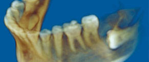

IMTEC Imaging's ILUMA scanner facilitates medical and dental professionals with the ability to take high-resolution CT scans in the office at an affordable price and saves patient’s time. The ILUMA scanner is intelligently designed for aesthetic beauty, easy to use, ultra high-resolution scans and the safety of the patients. The total scan takes less than 40 seconds to produce an easily maneuverable digital full volume CT image. It is becoming the new standard of radiographic care for patients.
ILUMA uses the latest generation of advancements in Cone Beam Volumetric Tomography to produce advanced, state-of-the-art images. When using ILUMA, clinicians have the most accurate anatomic information to plant treatment procedures. ILUMA delivers accurate images in as little as four minutes with images comparable to Medical CT's with much less radiation doses. Many top hospitals in India, especially Mumbai, are now equipped with this avant-grade technology.
ILUMA Features
- Orthodontic and Maxillofacial applications
- Amorphous Silicon Flat Panel Sensor Plates
- High resolution images
- Full-volume rendering
- Ultra-thin CT slices
- Treatment planning & simulation software : ILUMA Vision 3D™, V-Works™ and V-Implant™ Professional
- Panoramic and 2D radiographic images